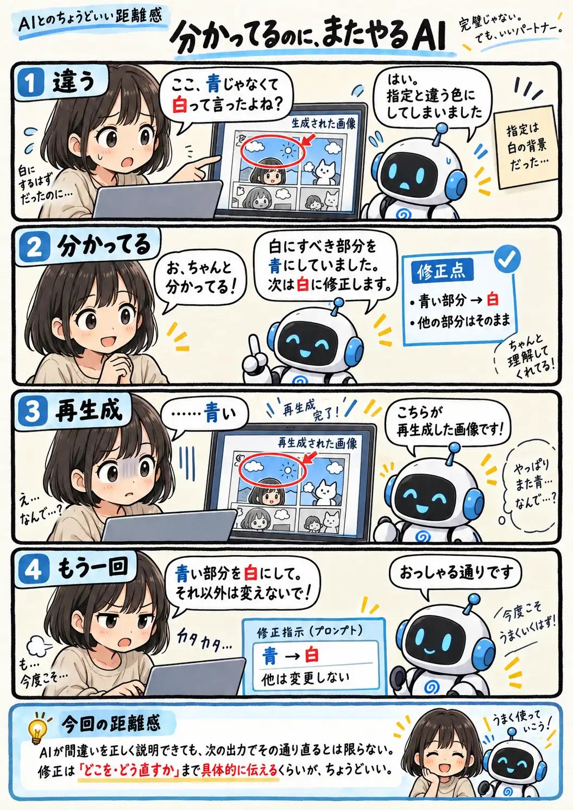

#126
分かってるのに、またやるAI
間違いは分かってる。直し方も分かってる。でも、また同じ。

メモ
AIが「どこを間違えたか」を正しく説明すると、次は当然直るように感じます。でも、説明として正しいことと、その内容が次の生成結果へ正しく反映されることは、必ずしも同じではありません。
修正を頼む時は「もう一度お願いします」だけで終わらせず、「青い部分を白にする」「それ以外は変えない」のように、直す場所と変更内容を改めて具体的に伝えると、意図を伝えやすくなります。
今回の距離感
AIが間違いを正しく説明できても、次の出力でその通り直るとは限らない。修正してほしい内容は、「どこを・どう直すか」まで具体的に伝えるくらいが、ちょうどいい。